|
|
Novels and short stories
Anthologies
Translation and editing
| 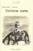 |
Francisco Brines
L'ultima costa.
A cura di: Francesco Luti.
|
| 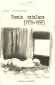 |
Pere GimFerrer
Poesie Catalane (1970-1998)
A cura di: Francesco Luti.
|
| 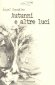 |
Angel Gonzalez
Autunni e altre luci
A cura di: Francesco Luti.
|
| 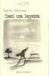 |
Claudio Rodriguez
Quasi una leggenda
A cura di: Francesco Luti.
|
| 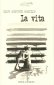 |
Eloy Sanchez Rosillo
La vita
A cura di: Francesco Luti.
|
|
Vicente Gallego
Poesie scelte (1988-2008)
©2012 Mauro Pagliai, cm 12x17, pp. 120, br., € 9,00
|
|
Edgardo Dobry
Cose
©2012 Mauro Pagliai, cm 12x17, pp. 112, br., € 9,00
|
| 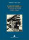 |
Carlos Barral
Poesie scelte (1952-1986)
©2010 Mauro Pagliai, cm 12x17, pp. 136, br., € 10,00
|
| 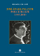 |
José Ángel Valente
Poesie scelte (1955-2000)
©2010 Mauro Pagliai, cm 12x17, pp. 120, br., € 9,00
|
|
Antonio Colinas
Poesie scelte (1969-2008)
©2008, cm 12x17, pp. 128, br., € 9,00
|
|
José María Micó
Prima stazione
©2008, cm 12x17, pp. 112, br., € 9,00
|
|
José Augustin Goytisolo.
Poesie scelte (1955-1996).
©2007, Mauro Pagliai, cm 12x17, pp. 208, br., € 8,00
|
 |
Carlos Marzal.
Poesie scelte (1987-2001)
©2007, Mauro Pagliai, cm 12x17, pp. 208, br., € 8,00
|
|
Pere Gimferrer.
Marea solare, marea lunare (1963-1998).
©2006, cm 12x17, pp. 160, br., € 10,00
|
| 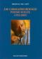 |
José Manuel Caballero Bonald.
Poesie scelte (1952-2005).
©2006, cm 12x17, pp. 112, br., € 9,00
|
|
Eloy Sánchez Rosillo.
Il fulgore del lampo. (1978-1996).
©2005, cm 12x17, pp. 144, br., € 9,00
|
| 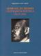 |
Jaime Gil De Biedma.
Antologia poetica (1953-1981).
©2005, cm 12x17, pp. 132, br., € 9,00
|
| 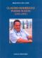 |
Claudio Rodríguez.
Poesie scelte. (1953-1991).
©2004, cm 12x17, pp. 136, br., € 9,00
|
| 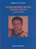 |
Felipe Benítez Reyes.
Poesie scelte. (1979-1999).
©2004, cm 12x17, pp. 128, br., € 9,00
|
|
Luis Antonio de Villena.
Via dall' inverno. (1971-2001).
©2003, cm 12x17, pp. 144, br., € 9,00
|
|
Francisco Brines.
Antologia poetica (1959-1996).
©2003, cm 12x17, pp. 144, br., € 9,00
|
| 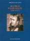 |
Ruy Belo.
Poesie scelte. (1961-1977).
©2003, cm 12x17, pp. 128, br., € 9,00
|
|
Carlos Bousoño.
Antologia poetica (1946-1996). Con una nota di Mario Luzi.
©2002, cm 12x17, pp. 144, br., € 9,00
|
| 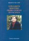 |
Luis García Montero.
Primo giorno di vacanza.
©2001, cm 12x17, pp. 176, br., € 11,36
|
|
Ángel González.
Nel Nido del cuore.
©2001, cm 12x17, pp. 160, br., € 11,36
|
|
Mario Benedetti.
Difesa dell' allegria.
©2000, cm 12x17, pp. 184, br., € 12,39
|
|
|